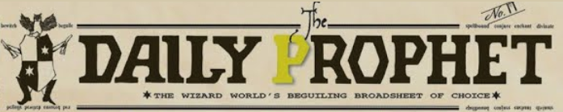

Neville Longbottom tells his story
Neville Longbottom tells his story

Memorial Planned Exclusive
Harry Potter
|
Defeats he who must not be named |

|
 Page 5
Page 5
 or years, Hogwarts School of Witchcraft and Wizardry has been
a heaven for any who have come seeking help. But on the night when
He Who Must Not Be Named came calling, Hogwarts was no longer a
heaven. It became a battlefield, and many lives were lost in the fight
to save the school and defeat You Know Who once and for all. Now, in
honor of those who died in the Battle of Hogwarts, a memorial is being
built in the fields near Albus Dumbledore's final resting
or years, Hogwarts School of Witchcraft and Wizardry has been
a heaven for any who have come seeking help. But on the night when
He Who Must Not Be Named came calling, Hogwarts was no longer a
heaven. It became a battlefield, and many lives were lost in the fight
to save the school and defeat You Know Who once and for all. Now, in
honor of those who died in the Battle of Hogwarts, a memorial is being
built in the fields near Albus Dumbledore's final resting
The true story of the night the Dark Lord died
December 2012
| s | m | t | w | t | f | s |
| 1 | ||||||
| 2 | 3 | 4 | 5 | 6 | 7 | 8 |
| 9 | 10 | 11 | 12 | 13 | 14 | 15 |
| 16 | 17 | 18 | 19 | 20 | 21 | 22 |
| 23 | 24 | 25 | 26 | 27 | 28 | 29 |
| 30 | 31 |

Severus Snape Remembered the real story
hen I first met Professor Severus Snape, I was convinced he hated me.
In some ways, this was true. But his love for my mother was far stronger
than any feelings of hatred he may have still been harboring for his lost
love. He

 Minerva Mcgonagall
Minerva Mcgonagall
named new hogwarts
headmistress
 Full story page 4
Full story page 4